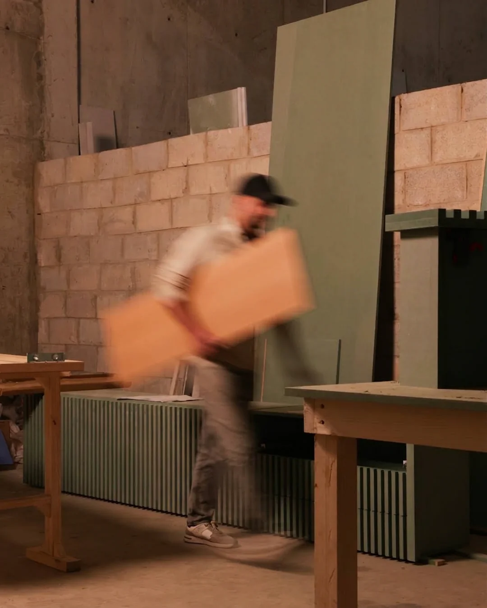

It all meets at the bench.
The name is literal. The underline in our wordmark, the stroke that joins the B to the H, is the bench: the one surface where architect, client, and maker stand on the same side.
Not a counter between us.
A bench.
Most fabrication happens behind a counter: drawings in, invoice out, and a black box in between. The Haus is built around the opposite. Your project lives on a bench you can walk up to: see your piece mid-joint, put your hands on the actual veneer, argue a tolerance while it can still be moved.
The bench is where a drawing stops being an instruction and becomes a shared object.
Old hands, a designer’s eye,
and a system behind both.
The floor is run by a master carpenter with forty years at the bench, out of retirement because this was worth coming back for. Beside him, a working architect holds the quality bar and reads every drawing the way its author meant it. Behind them both, founders from tech and finance keep the process honest: documented, scheduled, and communicated.
Craft you cannot hire, judgment you cannot fake, and discipline you can rely on. That combination is the Haus.

Lebanon · Est. at the bench
Come stand
at the bench.
The best way to know if we’re your workshop is to visit it. Bring a drawing, or just bring questions. Either way you’ll leave knowing exactly how your details would be treated here.
Send us your drawings.
Or bring them in person. The bench is long enough.